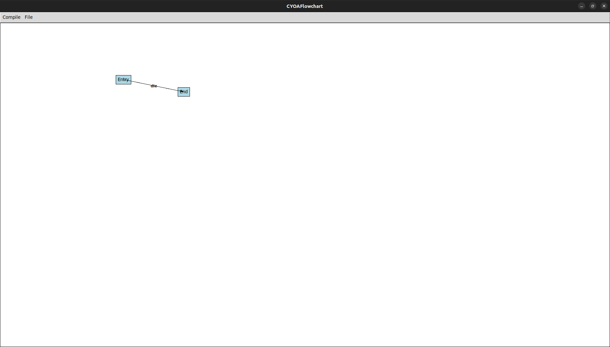

Wildfire ABM

Wildfire ABM
Flowchart engine is a basic game engine, built using Tkinter, that allows the user to create textual video games. It functions by starting off with an initial node, and then branching out from their, with nodes being conditional on the output from the prior node. It then allows the saving of program from the flowchart maker into a .json, which can then be run with the package, to allow for the playing of the generated game.
The developer makes a node by right-clicking on the screen. The node is then edited by right-clicking on the node. Each node has a name, which the developer sees, and a description, which the user sees. The name is what is set when the node is spawned. The game starts from the Entry node, and requires the existence of an Entry node. Connections are also added by right-clicking on the first node, and typing in the name of the second node. Connections are directional, and conditional on the user typing in the name of the connection.
Go Back